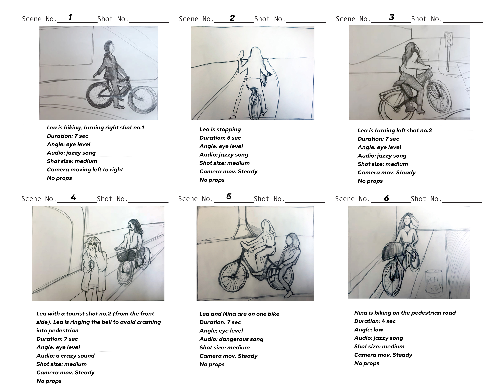

Storyboard "I Bike Cph"
The story board helps us to visualize the scenes and find potential problems before they occur during the video production.
The process
We chose as a target group mainly young adults and that's why we decided to include a bit of humour in our video, namely to add some scenes with "Do not do this" which were planned to be fresh and funny ( and I think they are ). The overall idea of the video was to show very quickly the main three signs for stopping, turning left and turning right when someone is cycling. At the end of the video we have three funny parts- the cyclist bumping a pedestrian, two people on one bike and cycling on the pedestrian road.

What was the plan of shooting the video and what dramaturgical elements we had in mind.
We chose exterior location for our video - the most famous and tourist area in Copenhagen - Nyhavn. The colours are natural. There are no natural sounds, because we wanted to replace them with a very light and relaxing jazz music. The narration (Nina's voice) was recorded in a special soundproof room, located in one of KEA's buildings, and the result is really very nice. The story was recorded in real time with a natural speed. The size of the shots are medium, on the eye level and we used mainly left to right camera movements or steady camera.